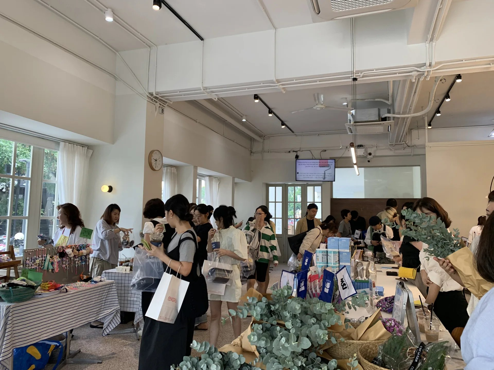
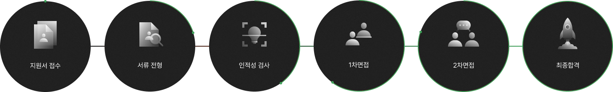

![홈으로 가기](data:image/svg+xml,%3csvg%20width='18'%20height='18'%20viewBox='0%200%2018%2018'%20fill='none'%20xmlns='http://www.w3.org/2000/svg'%3e%3cmask%20id='path-1-inside-1_4283_62202'%20fill='white'%3e%3cpath%20fill-rule='evenodd'%20clip-rule='evenodd'%20d='M9.55046%201.36045C9.21651%201.14027%208.78349%201.14027%208.44954%201.36045L2.44954%205.31649C2.1689%205.50153%202%205.8152%202%206.15136V14.9975C2%2015.5498%202.44772%2015.9975%203%2015.9975H6C6.55228%2015.9975%207%2015.5498%207%2014.9975V10.9982C7%2010.4459%207.44772%209.9982%208%209.9982H10C10.5523%209.9982%2011%2010.4459%2011%2010.9982V14.9975C11%2015.5498%2011.4477%2015.9975%2012%2015.9975H15C15.5523%2015.9975%2016%2015.5498%2016%2014.9975V6.15136C16%205.8152%2015.8311%205.50153%2015.5505%205.31649L9.55046%201.36045Z'/%3e%3c/mask%3e%3cpath%20d='M15.5505%205.31649L15%206.15136L15.5505%205.31649ZM9.55046%201.36045L9%202.19531L9.55046%201.36045ZM2.44954%205.31649L1.89908%204.48163L2.44954%205.31649ZM3%206.15136L9%202.19531L7.89908%200.525588L1.89908%204.48163L3%206.15136ZM3%2014.9975V6.15136H1V14.9975H3ZM6%2014.9975H3V16.9975H6V14.9975ZM8%2014.9975V10.9982H6V14.9975H8ZM8%2010.9982H10V8.9982H8V10.9982ZM10%2010.9982V14.9975H12V10.9982H10ZM15%2014.9975H12V16.9975H15V14.9975ZM15%206.15136V14.9975H17V6.15136H15ZM9%202.19531L15%206.15136L16.1009%204.48163L10.1009%200.525588L9%202.19531ZM17%206.15136C17%205.47904%2016.6622%204.85171%2016.1009%204.48163L15%206.15136H17ZM15%2016.9975C16.1046%2016.9975%2017%2016.1021%2017%2014.9975H15V16.9975ZM10%2014.9975C10%2016.1021%2010.8954%2016.9975%2012%2016.9975V14.9975V14.9975H10ZM10%2010.9982H12C12%209.89363%2011.1046%208.9982%2010%208.9982V10.9982ZM8%2010.9982V10.9982V8.9982C6.89543%208.9982%206%209.89363%206%2010.9982H8ZM6%2016.9975C7.10457%2016.9975%208%2016.1021%208%2014.9975H6V16.9975ZM1%2014.9975C1%2016.1021%201.89543%2016.9975%203%2016.9975V14.9975H3H1ZM9%202.19531L9%202.19531L10.1009%200.525588C9.43303%200.0852203%208.56697%200.0852212%207.89908%200.525588L9%202.19531ZM1.89908%204.48163C1.33779%204.85171%201%205.47904%201%206.15136H3L1.89908%204.48163Z'%20fill='%23999999'%20mask='url(%23path-1-inside-1_4283_62202)'/%3e%3c/svg%3e)

Recruit
Grow with first, across Asia.
We hire people who build markets, not just campaigns.
퍼스트마케팅컴퍼니에서 아시아를 무대로 일해보세요.
AI로 일하고, 현지에서 실행할 인재를 찾습니다.

first, where careers
cross borders
퍼스트마케팅컴퍼니, 커리어가 아시아로 확장되는 곳
AI-First Workflow
AI 업무 방식
- - 반복 업무 자동화
- - AI 도구 전사 지원
Global Mobility
해외 거점 근무
- - 해외 현지 법인 근무 기회
- - 해외 출장 지원
Special Days
기념일 지원
- - 생일 반차 제공
- - 명절 선물 지급
Growth Support
성장 지원
- - 직무 교육비 지원
- - 어학 지원
- - 자격증 응시료 지원
Family Support
경조사 지원
- - 경조 휴가 및 경조금
Welfare Benefits
편의 지원
- - 최신 장비 지원
- - 간식 · 음료 상시 제공
채용 공고
국가별 공고는 해당 국가 언어로 게시됩니다. 공고를 누르면 상세 내용이 열립니다.
아시아 5개국 캠페인의 전략 수립과 운영을 담당합니다.
주요 업무
- 아시아 5개국 캠페인 전략 수립과 운영
- 현지 거점·파트너 협업 관리
- 캠페인 성과 분석과 보고
자격 요건
- 마케팅 경력 3년 이상
- 캠페인 기획·운영 경험
- 기본적인 영어 커뮤니케이션
우대 사항
- 해외 마케팅·주재 경험
- 베트남어 또는 중국어 가능자
- AI 도구 활용에 능숙한 분
검색·SNS 광고 운영과 성과 분석을 담당합니다.
주요 업무
- 검색·SNS 광고 운영
- 성과 데이터 분석과 리포트
- 랜딩페이지·광고 소재 개선
자격 요건
- 신입 또는 경력
- 데이터 기반 사고
- GA·메타 광고 관리자 사용 가능
우대 사항
- 광고 운영 실무 경험
- 콘텐츠 제작 가능자
브랜드 콘텐츠와 캠페인 디자인을 제작합니다. 포트폴리오 필수.
주요 업무
- 브랜드 콘텐츠·캠페인 디자인
- 상세페이지·SNS 소재 제작
자격 요건
- 디자인 경력 2년 이상
- 포트폴리오 필수
- 포토샵·일러스트레이터 능숙
우대 사항
- 영상 편집 가능자
- 브랜딩 프로젝트 경험
Vận hành chiến dịch influencer và trải nghiệm khách hàng cho các thương hiệu Hàn Quốc.
Nhiệm vụ chính
- Vận hành chiến dịch influencer cho thương hiệu Hàn Quốc
- Quản lý trải nghiệm khách hàng và báo cáo kết quả
- Phối hợp với đội ngũ tại Hàn Quốc
Yêu cầu
- Tốt nghiệp cao đẳng trở lên
- Kỹ năng giao tiếp tốt
- Sử dụng thành thạo mạng xã hội
Ưu tiên
- Biết tiếng Hàn hoặc tiếng Anh
- Kinh nghiệm marketing từ 1 năm
Tham gia mạng lưới KOC của first, nhận chiến dịch từ các thương hiệu Hàn Quốc.
Nhiệm vụ chính
- Trải nghiệm và review sản phẩm, nhà hàng Hàn Quốc
- Đăng nội dung trên TikTok, Instagram
Yêu cầu
- Có kênh TikTok hoặc Instagram đang hoạt động
- Nội dung sáng tạo, chân thực
Ưu tiên
- Từ 10.000 người theo dõi
- Quan tâm đến văn hóa Hàn Quốc
负责韩国品牌在中国市场的跨境电商平台运营与推广。
岗位职责
- 负责韩国品牌跨境电商平台的运营与推广
- 商品上架、活动策划与数据分析
任职要求
- 大专以上学历
- 熟悉跨境电商平台运营
- 良好的数据分析能力
加分项
- 有韩语基础
- 有韩国品牌运营经验
策划并运营韩国品牌的小红书种草内容。
岗位职责
- 策划并运营韩国品牌的小红书种草内容
- 与达人合作推进内容传播
任职要求
- 熟悉小红书内容生态
- 具备内容策划与文案能力
加分项
- 有爆款笔记经验
- 可远程办公
ประสานงานแคมเปญของแบรนด์เกาหลีร่วมกับพาร์ทเนอร์ในประเทศไทย
หน้าที่ความรับผิดชอบ
- ประสานงานแคมเปญของแบรนด์เกาหลีกับพาร์ทเนอร์ไทย
- ดูแลตารางงานและรายงานผล
คุณสมบัติ
- สื่อสารภาษาอังกฤษได้
- มีทักษะการประสานงานที่ดี
พิจารณาเป็นพิเศษ
- มีประสบการณ์ด้านการตลาด
- สนใจวัฒนธรรมเกาหลี
ร่วมรีวิวสินค้าและร้านอาหารของแบรนด์เกาหลีในแคมเปญต่าง ๆ
หน้าที่ความรับผิดชอบ
- รีวิวสินค้าและร้านอาหารแบรนด์เกาหลี
- สร้างคอนเทนต์ลง TikTok และ Instagram
คุณสมบัติ
- มีช่องโซเชียลที่ใช้งานอยู่
- คอนเทนต์จริงใจ น่าเชื่อถือ
พิจารณาเป็นพิเศษ
- ผู้ติดตาม 10,000 คนขึ้นไป
ကိုရီးယားဘရန်းများ၏ မြန်မာစျေးကွက် ပရောဂျက်များကို ညှိနှိုင်းဆောင်ရွက်ပေးရန်။
တာဝန်များ
- ကိုရီးယားဘရန်းများ၏ မြန်မာပရောဂျက်များ ညှိနှိုင်းခြင်း
- လုပ်ငန်းအစီအစဉ်နှင့် အစီရင်ခံစာ ပြင်ဆင်ခြင်း
လိုအပ်ချက်များ
- အင်္ဂလိပ်ဘာသာ ပြောဆိုနိုင်ရမည်
- ညှိနှိုင်းဆက်ဆံရေး ကောင်းမွန်ရမည်
ဦးစားပေးချက်များ
- မားကတ်တင်း အတွေ့အကြုံရှိသူ
ဒေသတွင်း ကမ်ပိန်းများနှင့် စျေးကွက်သုတေသနတွင် ပူးပေါင်းဆောင်ရွက်ရန်။
တာဝန်များ
- ဒေသတွင်း ကမ်ပိန်းများတွင် ပူးပေါင်းဆောင်ရွက်ခြင်း
- စျေးကွက်သုတေသန ထောက်ပံ့ခြင်း
လိုအပ်ချက်များ
- ဆိုရှယ်မီဒီယာ ကျွမ်းကျင်စွာ အသုံးပြုနိုင်ရမည်
ဦးစားပေးချက်များ
- ကိုရီးယားယဉ်ကျေးမှုကို စိတ်ဝင်စားသူ
Recruitment process

지원서 접수
이메일(work@firstmkt.co.kr)로 자유 양식 지원서를 접수합니다.
디자인 · 콘텐츠 직군은 포트폴리오를 함께 보내주세요.서류전형
지원서의 각 항목에 기재된 내용과 자기소개서를 바탕으로, 지원자가 지원 직무와 회사에 적합한 자격, 경험, 열정을 가진 인재인지를 종합적으로 평가합니다.
※ 디자인/카피라이터 직군 지원자 포트폴리오 필수 제출
(PDF 50MB 이하)인적성 검사
뇌 과학 기반의 온라인 인적성검사(AI)를 통해 신뢰역량, 성과역량, 가치역량을 기반으로 지원자의 성장 가능성을 종합적으로 평가합니다.
1차 면접 (대면)
실제 업무를 수행하기 위한 능력과 열정, 전략적 사고역량, 실무역량 등을 평가하는 1차 면접이 진행됩니다. 면접은 대면 일대일 방식으로 진행됩니다.
2차 면접 (실무 테스트)
1차 면접 합격자를 대상으로 실무 테스트를 통해 지원자의 실무 역량과 문제 해결력을 평가하는 절차입니다. 더하여 지원자가 퍼스트마케팅컴퍼니와 조직에 대해 더욱 알아가는 시간을 갖습니다.
※ 개발 직군의 경우, 코딩테스트로 진행될 수 있습니다.최종 합격
최종 면접에 합격한 대상자는 퍼스트마케팅컴퍼니의 동료로 합류하게 되며, 온보딩 후 프로젝트에 배치됩니다.